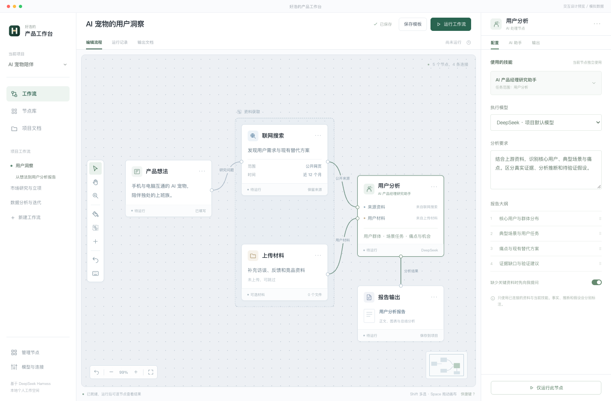

好浩的产品工作台 · 节点工作流改造 PRD
个人产品经理 · macOS桌面 · v2.0.2
📋 项目信息
📝 版本记录
| 版本 | 日期 | 修订人 | 修订说明 |
|---|
| 2.0.2 | 2026-10-18 | Codex | 增加界面区域明暗层级及输入蓝、分析琥珀、文档紫的节点语义色；连线、节点库、缩略图、配置标题同步，支持恢复分类默认颜色。 |
| 2.0.1 | 2026-10-18 | Codex | 文档节点增加独立大纲编辑、结构预览、恢复默认、多文档逐份生成、章节校验补齐和对应版本大纲导出。 |
| 2.0 | 2026-10-18 | Codex | 将固定模块改为可连接节点，确立节点目录发现、三类节点、输入校验和独立产物规则。 |
一、需求背景
当前工作台以固定模块组织，增加能力需要同时修改模块目录、入口和执行代码。用户希望将功能包装成节点，自由组合数据采集、分析和产出，并在一个目录维护和扩展。
事实来源：用户本次需求与此前规划，现有程序和V4原型。暂无使用时长、转化率或市场验证数据。
二、需求目标
用户可以按任务组合能力，并清楚追踪每个节点使用的输入与产出；维护者通过节点目录增加普通功能。
| 用户结果 | 衡量指标 | 统计口径 | 预期方向 | 目标值 |
|---|
| 独立扩展能力 | 免修改主代码新增节点 | 新建包后发现、配置、执行和查看输出的验收用例 | 全部通过 | 验收用例通过；业务基线待确认 |
| 组合流程可信 | 输入校验与执行可追踪 | 失败、暂停、草稿、缓存和版本场景验收 | 全部通过 | 不静默伪造结果 |
三、需求概述（功能清单）
本期范围三类22种节点、画布编辑、真实执行、节点助手、可追溯产物、目录自动发现、桌面打包、旧数据兼容。
本期不做什么 / 暂不展开多人协作、云端工作流、循环/条件分支、任意远程插件商店；按DAG顺序执行，先保证本机核心链路。
| 模块 | 一级功能 | 说明 |
|---|
| 1 | 工作流画布 | 编辑与保存 |
| 2 | 节点库 | 自动发现 |
| 3 | 输入节点 | 材料输入 |
| 4 | 分析节点 | 限定任务 |
| 5 | 报告节点 | 按需交付 |
| 6 | 执行调度 | 运行和补充 |
| 7 | 节点助手 | 独立对话 |
| 8 | 结果展示 | 文档与图表 |
| 9 | 项目与兼容 | 保存和迁移 |
| 10 | 维护 | 独立节点包 |
四、详细方案
| 一级模块 | 二级功能 | 原型 | 描述 |
|---|
1
工作流画布 | 1.1 编辑与保存 |  打开可交互原型 | 【页面元素】画布、节点、类型端口、连接线、工具栏、缩略图、配置面板。导航使用深色、画布灰蓝、配置区明亮；输入节点蓝、分析节点琥珀、文档节点紫。类型标签与SVG图标提供非颜色识别，执行状态单独以文字、图标和标记色显示。连线按来源节点配色，节点库和缩略图采用同一套语义色。 【交互说明】添加节点后编辑配置；拖动端口连线；拖动节点；Shift多选、⌘G分组、Space平移、滚轮缩放、⌘Z撤销、N添加、C底色、Delete删除。自动保存成功后显示已保存；运行前等待保存。 【边界说明】禁止循环、相同连线、类型不兼容连线；运行和待补充时锁定结构。视图缩放、分组与颜色随工作流保存。 |
2
节点库 | 2.1 自动发现 | 打开可交互原型 | 【页面元素】按输入、数据分析、报告产出分组；搜索、节点版本和能力介绍、加载错误列表、目录位置。 【交互说明】扫描 nodes 下的 node.json；有效节点自动进入面板，表单从 fields 生成。新增文件后自动刷新，可手动立即刷新。 【边界说明】一个损坏节点不影响其他节点；重复ID隔离；禁用节点隐藏；缺失节点保留画布实例并阻止运行。插件是可信本地代码，禁止自动下载执行。 |
3
输入节点 | 3.1 材料输入 | 打开可交互原型 | 【页面元素】文字、文件、联网搜索、历史产物四种节点。文件预览和确认；联网公开检索词与网址。 【交互说明】上传文件先解析预览，确认后作为数据；Excel选择工作表；OCR沿用现有能力。联网搜索保留来源、失败列表与获取时间。 【边界说明】不将私人材料全文自动提交给搜索服务。空输入请求补充。历史项目原有文档可引用，不能篡改历史版本。 |
4
分析节点 | 4.1 限定任务 | 打开可交互原型 | 【页面元素】市场、用户、机会风险、漏斗、留存、A/B、迭代复盘七种。独立说明、模型、任务目标、可改大纲。 【交互说明】仅使用本节点规则和连接的数据；定性任务先检查匹配与充分性，统计任务先代码校验计算，再由AI解读。 【边界说明】用户研究数据连接MVP节点不能直接判错；检查是否有目标、约束等最小材料。数值计算不能靠AI编造或以草稿跳过。 |
5
报告节点 | 5.1 按需交付 | 打开可交互原型 | 【页面元素】研究报告、立项报告、完整MVP方案、需求文档、PRD、原型、流程、埋点、验收、数据报告、迭代方案。 【交互说明】各节点使用自己的规则及大纲，可直接连接材料，无需强制经过分析节点。立项仅含MVP简介。配置和输出页提供独立大纲编辑入口，支持恢复默认、结构预览、保存和保存并生成；#标题各生成一份文档，##/###定义章节，按用户保存的结构逐章填写。生成后检查缺章、顺序、空章与多余同级章节，尝试补齐后仍不符则报错保留旧结果。每份文档记录自己的大纲快照，导出的是填写后的正文。 【边界说明】需求文档描述需求问题、目标、场景与优先级；PRD描述已确认范围、功能规则、状态和验收，二者独立。 |
6
执行调度 | 6.1 运行和补充 | 打开可交互原型 | 【页面元素】整体运行、运行至当前节点、节点状态、进度、版本、缓存、停止按钮。 【交互说明】按拓扑顺序运行。材料不足暂停并说明建议；用户补充后继续，或明确选择带假设生成草稿。格式错误先修正。 【边界说明】上游失败停止下游；不能悄悄使用旧结果。配置、规则版本、上游输出、模型或上下文清空后变化均使缓存失效。中断保留已完成结果。 |
7
节点助手 | 7.1 独立对话 | 打开可交互原型 | 【页面元素】配置、AI助手、输出三个标签；即时用户消息、流式回复、问题弹窗、清空上下文。 【交互说明】对话只接入当前节点规则、配置、连接材料和当前结果。回答问题回到当前节点助手；运行中的任务结果在输出查看。 【边界说明】助手不得声称已执行实际未执行的动作。清空仅清除当前节点对话并使缓存失效，保留历史产物。 |
8
结果展示 | 8.1 文档与图表 | 打开可交互原型 | 【页面元素】当前节点文档列表、Markdown、SVG图表、独立总结、结构数据、HTML按需生成、下载。 【交互说明】切换文档时同步文档及要点总结；图表沿用自动SVG渲染、原始数据与来源查看、SVG/PNG导出。HTML只在用户点击后生成并缓存。 【边界说明】HTML沙箱预览；不执行不可信脚本或联网请求。模型输出错误展示明确原因，保留上一成功版本。 |
9
项目与兼容 | 9.1 保存和迁移 | 打开可交互原型 | 【页面元素】项目切换、工作流列表、新建、保存为模板、原工作台入口、模型设置。 【交互说明】数据使用现有加密存储；模型沿用厂商+Key，节点可使用项目默认或指定模型；旧工作台入口可查看原模块。 【边界说明】不删除旧项目、模型和文档。模板复制结构配置时明确包含的材料，不包含运行历史和Key。只在本机管理，无多人并发协作。 |
10
维护 | 10.1 独立节点包 | 打开可交互原型 | 【页面元素】每个节点目录包含 node.json、instructions.md 或 execute.mjs、维护说明。 【交互说明】配置型能力只修改节点目录；代码能力通过统一execute(context)入口包装，返回标准数据包。维护者不修改画布/表单/调度注册表。 【边界说明】系统底层新权限或新执行器仍需开发；不承诺任意第三方代码零适配。节点版本与规则哈希随运行快照保留。 |
待后续确认的产品口径
- 真实效率指标及目标值待用户试用后建立基线，当前按功能验收。
- 未来的条件分支、并行执行与云同步另行规划。